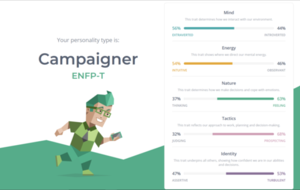
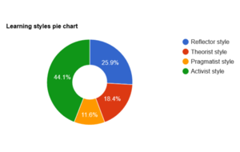
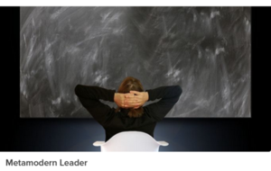

The results !
The following evaluation is based on the results from Leadership-style-quiz, learning-styles,and 16 personalities :)



What does it mean ?
These results of these tests will help describe who i am as a person and give a general idea of how i do things.It's a more or less accurate representation about myself .Though i'm somewhat carefree and free spirited and not a natural born leader, i would take any role to push along the group and move things forward, if i'm capable of course. Cooperation is very important and working on a common goal together is what cooperation means to me,not undermining a members effort and not leaving people behind for my own purpose.